O paraíso serrano onde natureza e aventura se encontram
Bem-vindo
O Parque Natural Municipal Montanhas de Teresópolis é uma das principais áreas de preservação ambiental do município,
abrangendo uma extensa região de Mata Atlântica protegida, formada por vales, montanhas, mirantes naturais e trilhas
que conectam o visitante diretamente ao cenário típico da Serra dos Órgãos.
Criado para preservar ecossistemas locais, proteger nascentes e promover educação ambiental, o parque se tornou referência
em turismo ecológico. Sua paisagem inclui formações rochosas icônicas, como a Pedra da Tartaruga, Pedra do Camelo e Pedra do Triunfo,
que atraem montanhistas, trilheiros e fotógrafos de toda a região.
Hoje, o parque é um espaço de contemplação, lazer sustentável e prática de atividades ao ar livre, oferecendo experiências que unem
aventura e contato profundo com a natureza.
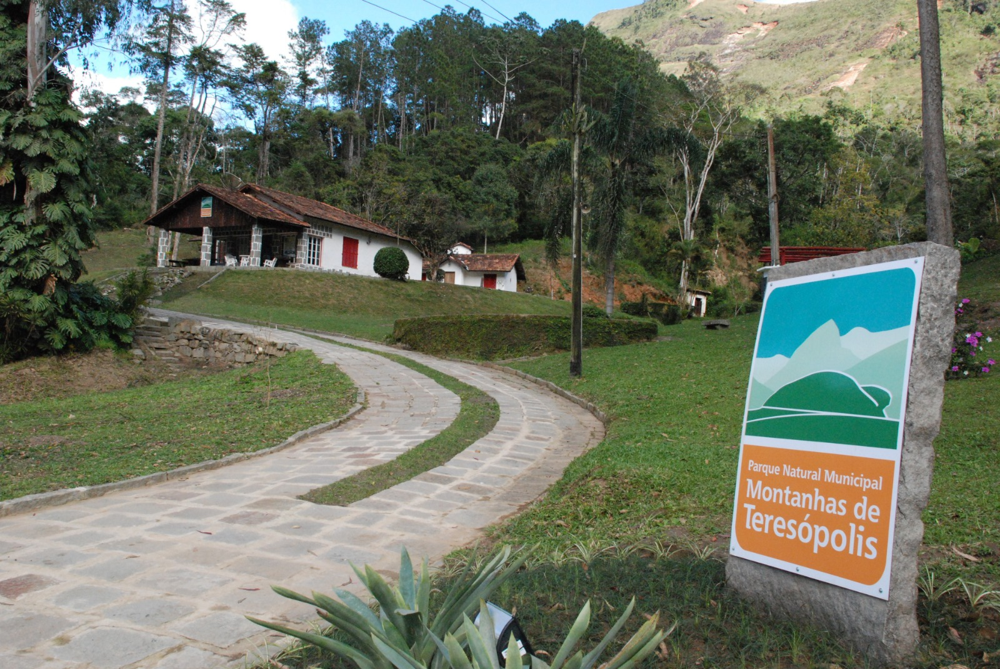
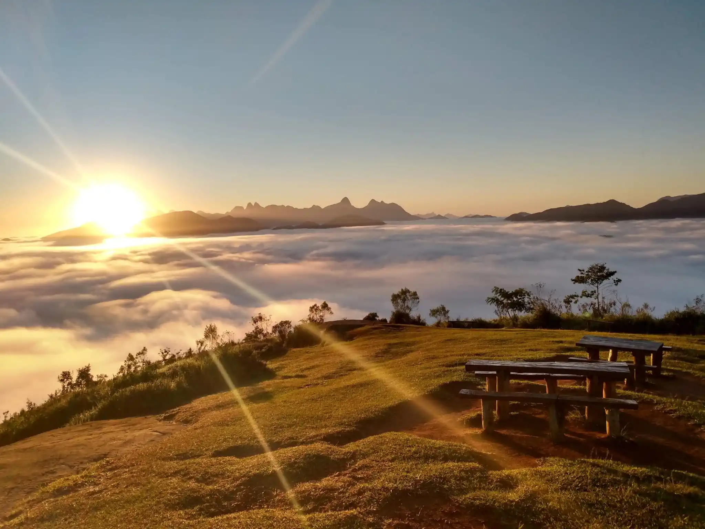
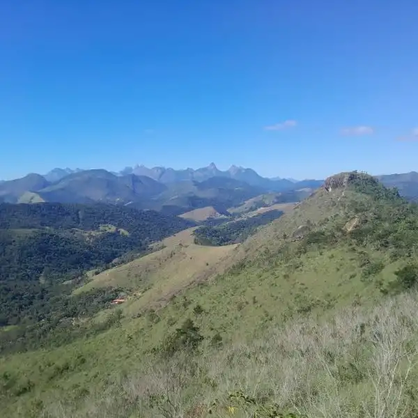
História
O Parque Natural Municipal Montanhas de Teresópolis é resultado de esforços municipais para proteger áreas essenciais de
Mata Atlântica e garantir a conservação de ecossistemas naturais presentes na Serra dos Órgãos. A região sempre foi marcada
por seus relevos montanhosos, vegetação densa e abundância de nascentes.
Antes de ser oficialmente parque, a área já era utilizada por montanhistas e aventureiros que buscavam suas trilhas e mirantes
naturais. Com o tempo, aumentou a necessidade de preservar o espaço diante do avanço urbano e do interesse crescente do turismo ecológico.
O parque foi criado com o objetivo de proteger a biodiversidade local, promover educação ambiental e garantir que futuras gerações
pudessem desfrutar de suas belezas naturais. Hoje, é considerado um dos pontos mais importantes de conservação ambiental da cidade.
Trilhas
O Parque Montanhas de Teresópolis oferece trilhas para todos os níveis, conectando visitantes a mirantes e formações rochosas únicas da região.
Confira algumas das principais opções disponíveis:
Trilha da Pedra da Tartaruga:
Uma das mais acessíveis e populares do parque. O trajeto leva a um mirante com vista panorâmica das montanhas da Serra dos Órgãos. Dificuldade: Fácil Tempo: 20–30 minutos
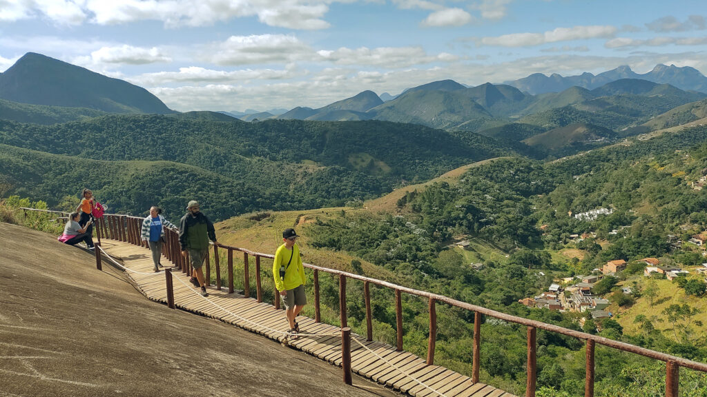
Trilha da Pedra do Camelo:
Com percurso moderado, a trilha leva ao topo de uma formação rochosa que oferece uma das vistas mais impressionantes do parque. Dificuldade: Moderado Tempo: 1 hora
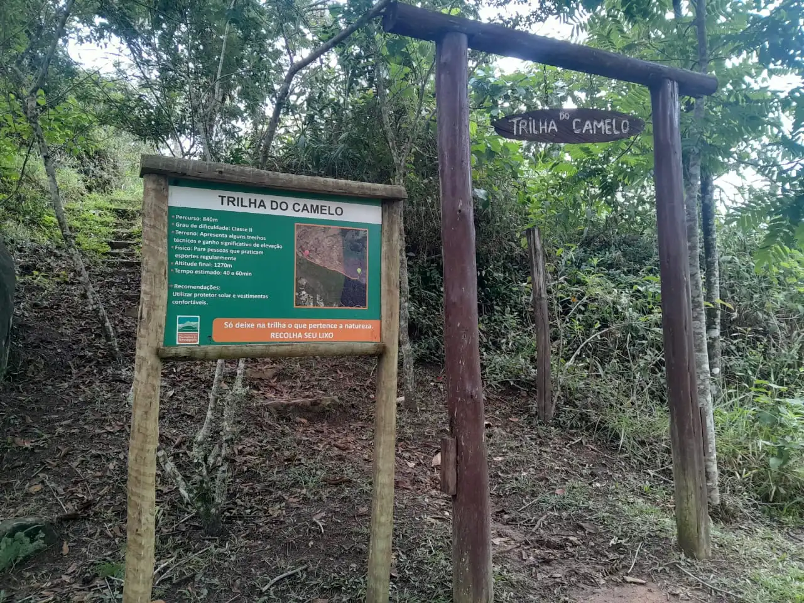
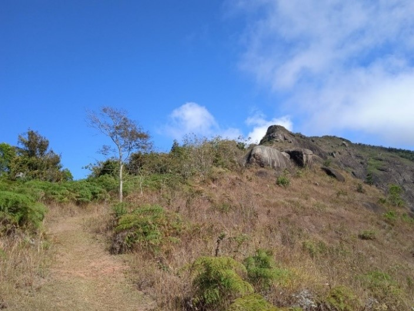
Trilha da Pedra do Triunfo:
Uma das mais desafiadoras do parque, levando a mirantes com vista privilegiada da Serra dos Órgãos e vales ao redor. Dificuldade: Moderado Tempo: 1h30
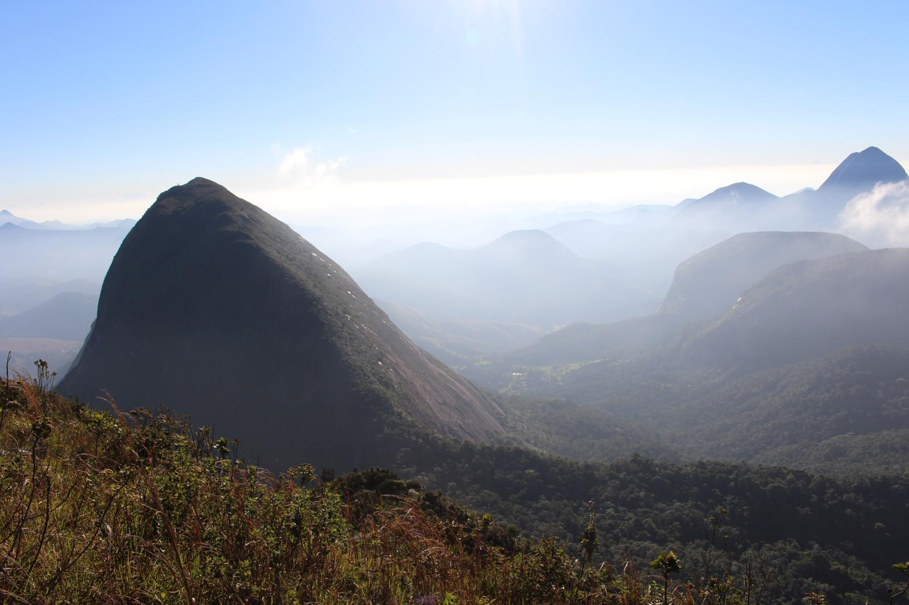
Biodiversidade
O Parque Montanhas de Teresópolis abriga uma extensa variedade de fauna e flora típicas da Mata Atlântica. Sua vegetação inclui áreas de
floresta densa, campos de altitude e regiões rochosas, adaptadas ao relevo irregular da serra.
Entre as espécies de flora destacam-se bromélias, orquídeas, árvores de grande porte e vegetação rupícola. A fauna inclui diversas espécies
de aves, pequenos mamíferos e répteis, além de animais típicos da Serra dos Órgãos.
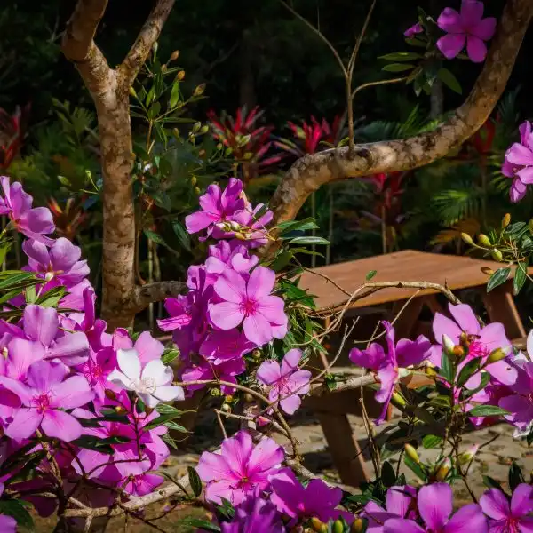
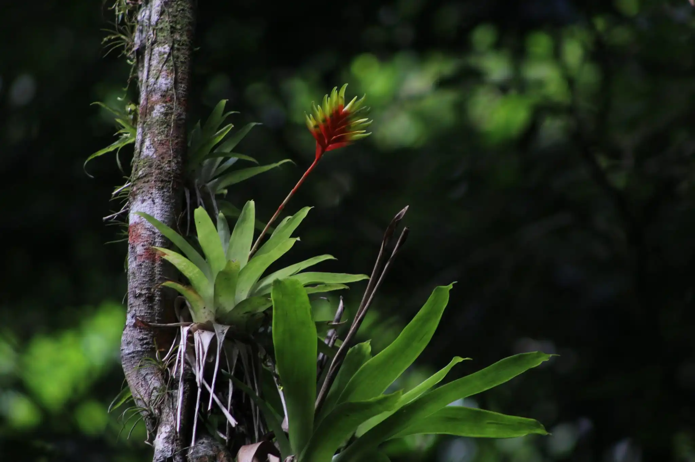
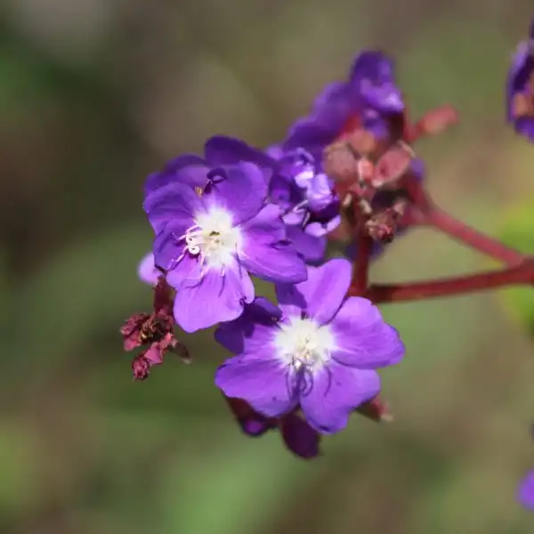
Entre os animais mais observados estão aves como gaviões, tucanos, sabiás, além de pequenos mamíferos e insetos característicos
dos ambientes serranos.
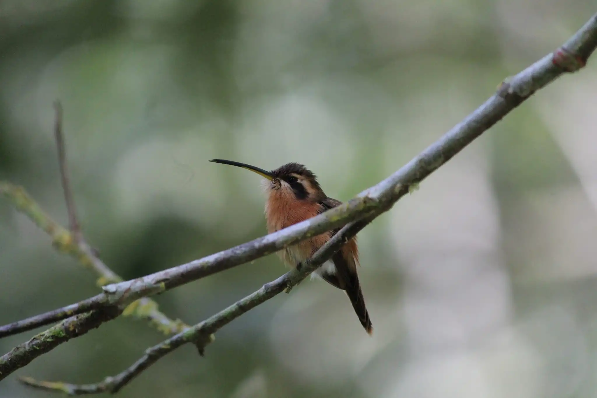
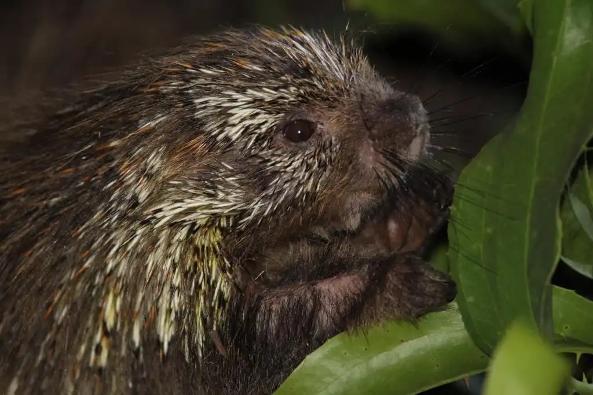
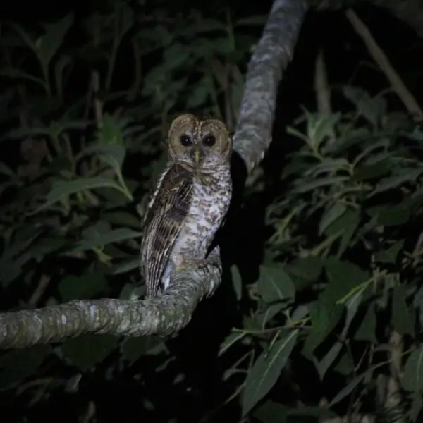
O parque também desempenha papel importante na proteção de nascentes que abastecem áreas do município, garantindo equilíbrio hídrico
e conservação dos ecossistemas locais.
Eventos e Horários
Participe dos eventos especiais promovidos pelo parque e aproveite horários de funcionamento acessíveis ao público.
Horário de Funcionamento: terça a domingo, das 8h às 17h
Entrada Gratuita.
Trilha Guiada da Pedra da Tartaruga: Caminhada educativa com guia explicando fauna, flora e geologia local.
Encontro de Fotografia da Natureza: Atividade para fotógrafos amadores e profissionais capturarem o nascer do sol.
Mutirão “Montanhas Limpas”: Ação ambiental envolvendo limpeza de trilhas e sensibilização ecológica.
Aula de Yoga ao Ar Livre: Sessão de relaxamento e meditação no mirante com vista para as montanhas.
Planeje sua Visita
A visitação ao parque é gratuita e algumas atividades podem exigir agendamento prévio. Utilize roupas adequadas, traga água,
protetor solar, lanterna e preserve o ambiente, mantendo as trilhas limpas.